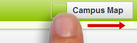

Marjon Induction - New Students

Feeling a bit lost?
This interactive map will give you helpful locations, such as campus parking zones and shops, on campus and around the wider local area. To switch between campus and local, simply slide the selector bar to your desired map type;
You can then toggle between markers for facilities, restaurants etc. by pressing the appropriate button;

If you are looking for a specific room on campus, use the search bar at the top of the page. You should be presented with a list of suggestions once you've started entering a room. Simply select the room you require from the list, and its location will be pinpointed on the map.

Welcome to the University of St. Mark & St. John!
Induction is the process of introducing you to the University, its staff and its environment. You'll complete your registration onto your programme of study and prepare for the academic year ahead.
This app is designed to help you before, during and after the induction process by providing you with a range of information to help make sure everything goes as smoothly as possible.
To access the quick menu, simply press the icon on the top left hand corner of the screen and select the section that you would like to visit from the list: